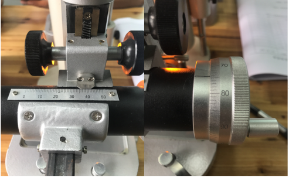

一、实验仪器(12分)
1、(3分)该实验所用主要仪器是：
A、钠光灯及电源、读数显微镜和牛顿环仪
B、高压汞灯及电源、读数显微镜和牛顿环仪
C、钠光灯、显微装置、测量装置和牛顿环装置
2、(3分)关于读数显微镜操作，下列说法正确的是:
A、只有（1）正确 B、只有（2）正确
C、只有（2）（3）（4）正确 D、（1）（2）（3）（4）全部正确
（1）使物镜筒自下而上地调节
（2）测量过程中十字叉丝的一条线必须与主尺平行
（3）测量过程中，读数鼓轮只能向一个方向转动
（4）测量过程中待测物不能移动
3、(3分)实验过程中因为读数鼓轮要求朝同一方向旋转，所以，在
实验开始测量之前，读数显微镜的主尺位置（需要测量的最大条纹直
径不超过15mm，最大主尺刻度50mm），合适的是：
A、0mm附近 B、5mm附近 C、25mm附近 D、45mm附近
4、(3分)读数显微镜的读数正确读法是：
A、先从主尺读出整毫米数值，再读出游标的整数值乘以0.01，然后相加得出读数
B、先从主尺读出整毫米数值，再读出游标估读一位小数后的读数值乘以0.01，然后相加得出读数
C、先从主尺读出估读一位小数的数值，再读出游标的整数值乘以0.01，然后相加得出读数
D、先从主尺读出估读一位小数的数值，再读出游标估读一位小数后的读数值乘以0.01，然后相加得出读数
二、实验目的(6分)
1、(3分)牛顿环实验将加深对光的（ ）的理解
A、衍射 B、反射 C、等厚干涉
2、(3分)可以利用牛顿环来（ ）的理解
A、测定光波波长、薄膜厚度、曲面的曲率半径及检验光学器件的表面质量
B、观察光的衍射现象及测定光波波长、薄膜厚度和曲面的曲率半径
C、观察光的反射、折射、衍射现象及测定光波波长和透镜的曲率半径
三、原理简述(30分)
1、(6分)本实验牛顿环仪中空气膜上下表面反射光的光程差为：
，该反射光干涉产生暗环的条件是： ，产生亮环的条件是：
;该空气薄膜透射光干涉的光程差为： ，其产生暗环的条件是：
，产生亮环的条件是：
A、\(\Delta =2d\) B、\(\Delta=2d+\lambda / 2\)
C、\(\Delta =k\lambda\) D、\(\Delta=(2k+1)\lambda / 2\)
2、(4分)牛顿环实验将测量式用\(R=\frac {D^{2}_{m}-D_{n}^{2}}{4(m-n)\lambda}\) ，而不用公式\(r_{k}^{2}=kR\lambda\)的原因是
A、只有（1） B、只有（1）（2）
C、1）（2）（4） D、只有（2）（3）
（1）消除干涉级次K的不确定性引起的系统误差；
（2）干涉环纹的几何中心难以精确确定；
（3）减小测量的偶然误差；
（4）减小测量的系统误差
3、(4分)牛顿环干涉条纹的特点为
A、只有（1）（2） B、（1）（2）（4）
C、（1）（2）（5） D、（1）（3）（4）
（1）明暗相间（2）内疏外密（3）内密外疏
（4）不等间距同心圆（5）等间距同心圆
4、(4分)牛顿环为什么能用逐差法处理数据,是因为
A、各环直径间距相等；
B、各级条纹级数差相等；
C、直径平方差是常数；
D、光程差可近似看成是线性的；
5、(4分)关于牛顿环实验，下面说法正确的是：
A、只有（1）（4）正确 B、（1）（2）（4）正确
C、只有（3）（4）正确 D、（1）（3）（4）正确
（1）不测量牛顿环半径而测量直径是因为圆心不易找；
（2）读数显微镜的零点误差是测量结果的最主要误差来源；
（3）牛顿环仪的接触压力引起玻璃变形使得环心暗点变成暗斑；
（4）用逐差法处理数据可以利用多组测量数据并降低误差；
6、(4分)关于原始数据采集，下面说法正确的是：
A、（1）（4）正确 B、只有（1）正确
C、只有（4）正确 D、（1）（3）（4）正确
（1）显微镜的测微鼓轮在每一次测量过程中只能向一个方向旋转，中途不能反转，避免空程差；
（2）测量完第5环左右读数后再测量第6环左右读数；
（3）测量完第14环左右读数后再测量第13环左右读数；
（4）由环中央移至左15环后退一环，从左14环起单方向测量至左5环，再过环中央，从右5环单方向测量至右14环；
7、(4分)下图中读数显微镜的正确读数为
A、39.742mm B、39.74mm C、39.7mm D、39.704mm
四、实验内容及数据处理(52分)
1、牛顿环数据记录和处理 (光波波长\(\lambda =5.893\times 10^{-7}m\) )
|
圈数 i |
显微镜读数X/mm |
直径\(D_i/mm\) |
逐差计算直径平方差\(D_{i+5}^{2}-D_{i}^{2}/mm^2\) |
|
|
Xi左 |
Xi右 |
|||
|
5 |
||||
|
6 |
||||
|
7 |
||||
|
8 |
||||
|
9 |
||||
|
10 |
/ |
|||
|
11 |
/ |
|||
|
12 |
/ |
|||
|
13 |
/ |
|||
|
14 |
/ |
|||
2、实验数据处理结果：
平均值\(\overline {D_{i+5}^2-D_{i}^2}\) = \(m^2\)
曲率半径 R= m
5组“直径平方差”的标准偏差值σ=